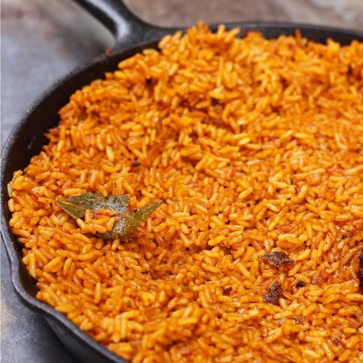

Flavours of Africa
NOTE: You can place your cursor over different parts of this page to see few effects. Hover on the image to zoom in slightly.Warning: Please read all instructions before cooking.
Contents:
-
Recipe #1-Jollof Rice
-
Recipe #2-Mandazi
-
Recipe #3-Mhadjeb
-
Recipe #4-Kedjenou
-
Recipe #5-Potjiekos
-
Recipe #6-
-
Recipe #7-Amala and Ewedu
-
Recipe #8-Chin-Chin
-
Recipe #9 Puff-Puff
-
Recipe #10-Abacha
Recipe #1-Jollof Rice (West African)

Ingredients
5 medium sized Roma tomatoes, roughly chopped
1 red bell pepper, roughly chopped
1 medium sized onion, roughly chopped, set aside
2 scotch bonnet peppers
1/4 cup of groundnut oil
3 tbsp tomato paste
2 cups of parboiled rice
2 1/2 cups of chicken stock
1 tsp salt to taste
1/2 tsp curry powder
1/2 tsp thyme
1 tsp All purpose seasoning
1 Knorr stock cube
3 bay leaves
Water, as needed
Instructions
Blend your tomatoes, red peppers and scotch bonnet peppers in a food processor or blender for about 45 seconds, make sure that everything is blended well.
In a medium sized pot , heat your oil on medium-high heat. Once the oil is heated add the onions you set aside and fry just until they turn golden brown. Once the onions have turned brown in color, add the tomato paste and fry for 2-3 minutes. Then add the tomato mixture (reserve about 1/4 cup and set aside) and fry the mixture with the onions and tomato paste for 30 minutes. Make sure you stir consistently so that the tomato mixture doesn't burn.
After 30 minutes, turn the heat down to medium, and add the chicken stock. Mix and add your seasonings (salt, curry powder, thyme, all purpose seasoning and the Knorr stock cube). Continue to boil for 10 minutes.
Add the parboiled rice to the pot. Mix it very well with the tomato stew. At this point, if you need to add water so that the rice is level with the tomato mixture/chicken stock,
go
ahead and do so. Add the bay leaves, cover the pot, and cook on medium to low heat for 15-30 minutes.
When the liquid has almost dried up, add the remaining tomato stew, cover and let it cook for another 5-10 minutes until the liquid has completely dried up. Turn off the heat,
mix thoroughly and your Jollof Rice is ready to be eaten.
Notes/Tips
It is key to use parboiled rice when cooking so that you don't end up with mushy rice.
When cooking the tomato stew, you can tell it is done because the oil will rise to the top.You can also tell if it is done when the bitter taste of the tomatoes has been cooked
out. The reason why we reserve 1/4 of the tomato mixture and add it at the end is so that it doesn't burn.
Recipe#2-Mandazi

Ingredients
Instructions